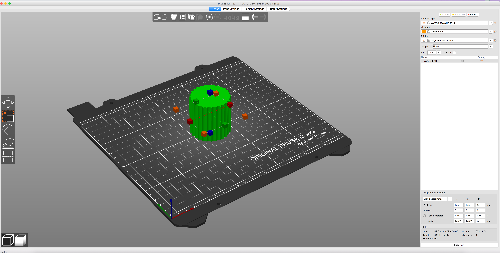

Template by W3.CSS
The assignment for week 4 was to design and 3D print a vase to hold plants and then design a watering can in Fusion360.
I followed Kevin's tutorial and made my vase on Fusion360 before importing the stl files to PrusaSlicer. I played around with scaling my vase a bit, before making it a bit bigger than it was originally.  I then went to Madison's tutorial on how to use vase mode in PrusaSlicer. From the original screen, I went into print settings and changed the vertical settings so the spiral vase box was checked. I also changed the number of layers on the bottom in the horizontal settings. It was originally 4 but after a bit of playing around with the value I wanted, i decided on having 6 layers. From that, I went back to the preview before looking at layers mode to see my newly hollowed out shape! From there it was only a matter of making sure I had the right filament and machine selected before I exported the gcode to an sd card and was all set to print!